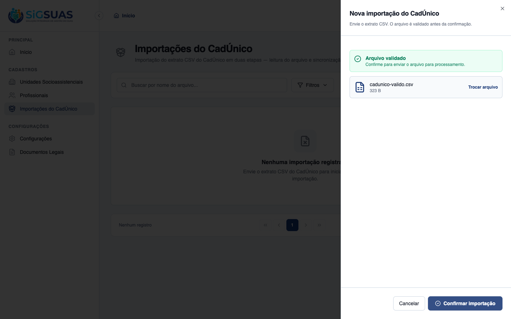
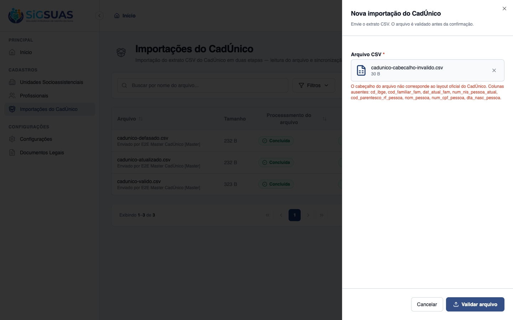
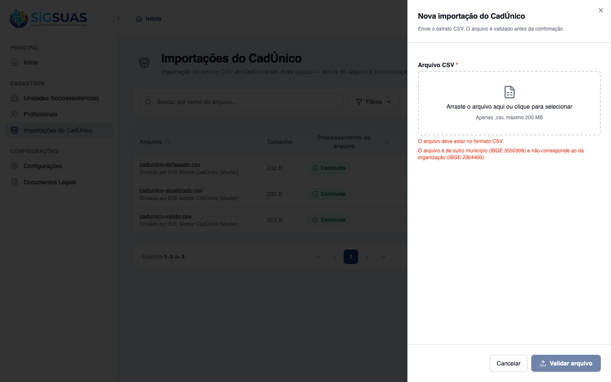
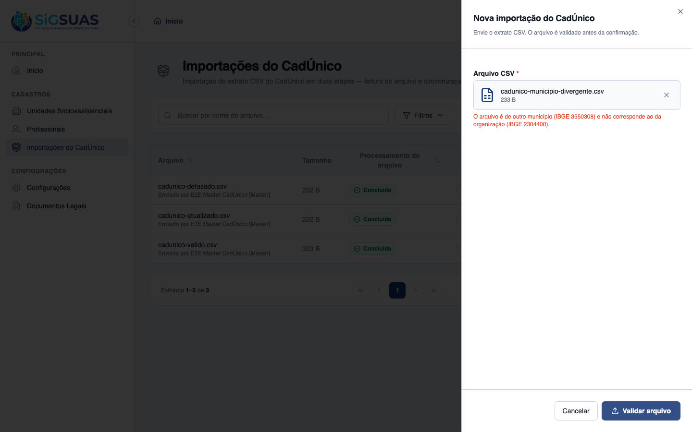
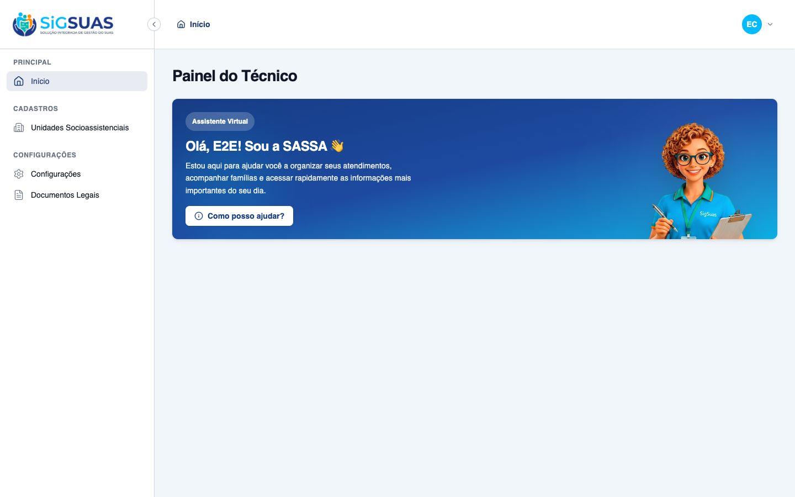
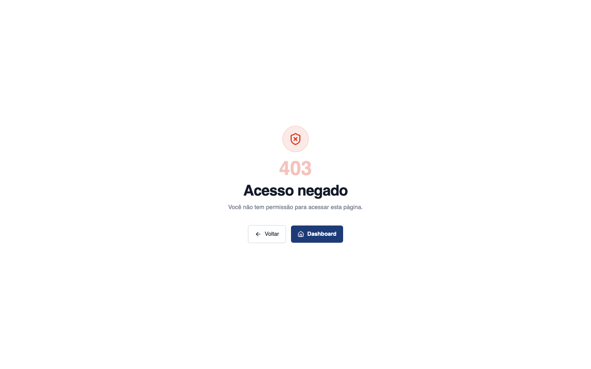
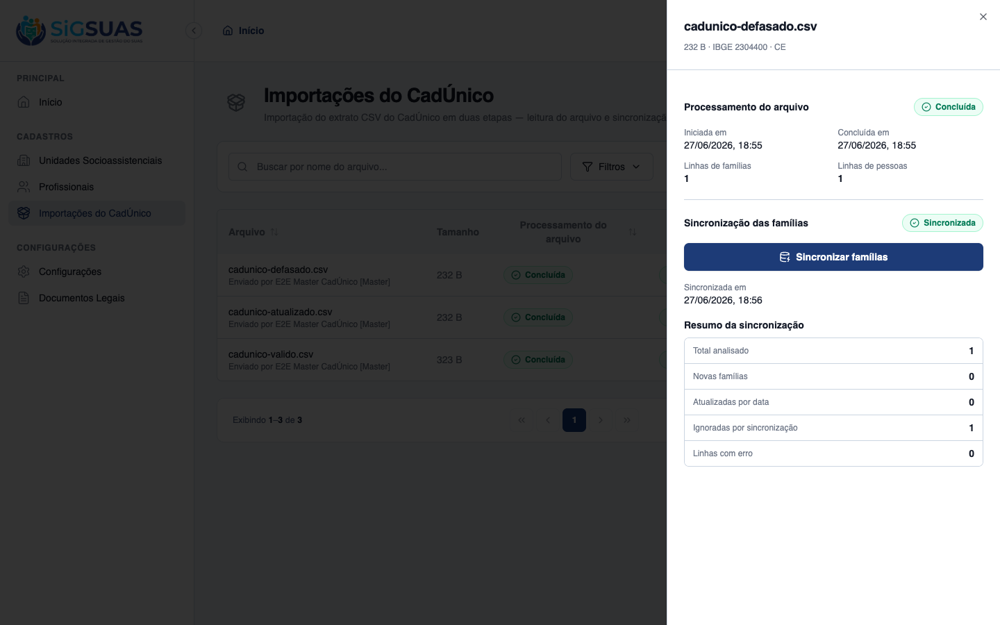
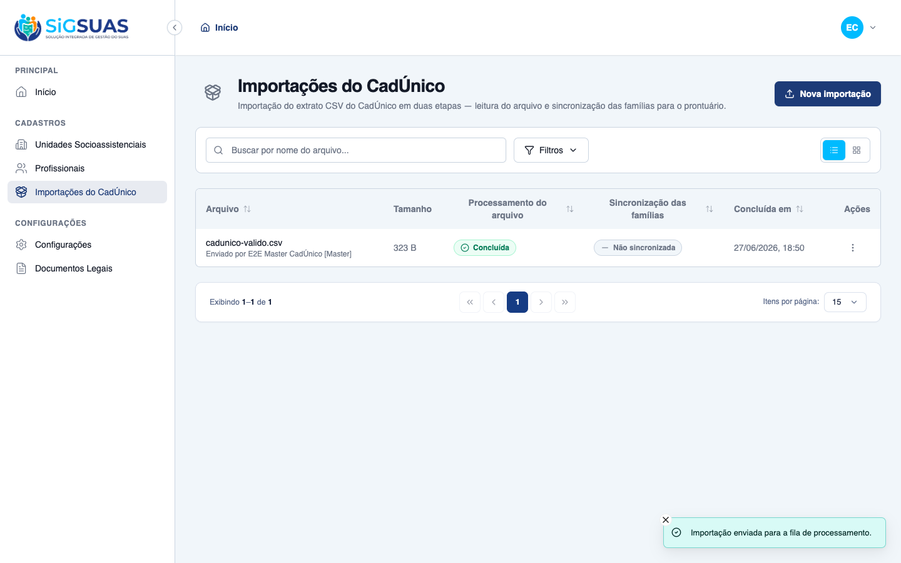
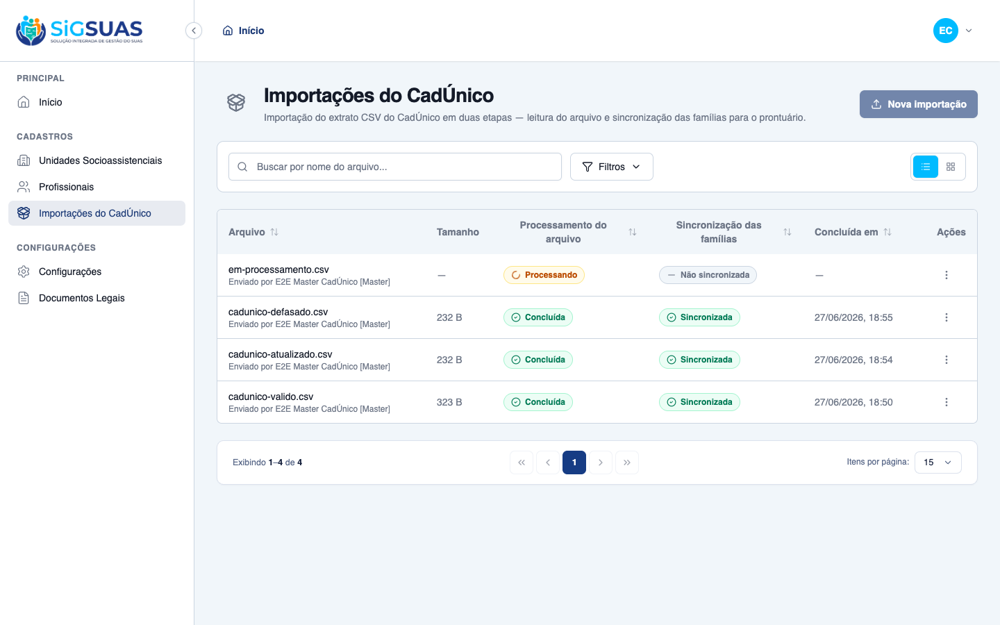

Os 12 critérios de aceite (CA01–CA12) foram exercitados: 9 com evidência direta no navegador (prints), 2 por cobertura automatizada (mecanismo de permissão por papel) e 1 combinado. Nenhuma falha.
| CA | Critério | Status |
|---|---|---|
| CA01 | Sucesso na validação inicial (HU01) | ATENDIDO · navegador |
| CA02 | Rejeição de formato/layout (HU01) | ATENDIDO · navegador |
| CA03 | Bloqueio de interface por falta de permissão (HU01) | ATENDIDO · navegador |
| CA04 | Criação de famílias inéditas (HU02) | ATENDIDO · navegador |
| CA05 | Atualização por data mais recente (HU02) | ATENDIDO · navegador |
| CA06 | Bloqueio de dados defasados/iguais (HU02) | ATENDIDO · navegador |
| CA07 | Bloqueio por concorrência ativa (HU02/RN11) | ATENDIDO · navegador |
| CA08 | Métricas detalhadas do resultado (HU03) | ATENDIDO · navegador |
| CA09 | Atribuição de permissão ao Profissional (HU04) | ATENDIDO · automatizado |
| CA10 | Revogação de acesso (HU04) | ATENDIDO · automatizado |
| CA11 | Histórico auditável (HU05) | ATENDIDO · navegador |
| CA12 | Isolamento multi-tenant no histórico (HU05/RN10) | ATENDIDO · navegador + automatizado |
Critério (Gherkin): Dado que sou Operacional do Tenant com a permissão de importação, quando faço upload de um CSV válido no layout oficial do CadÚnico, então o sistema confirma a validação estrutural e habilita o botão para confirmar o processamento do lote.
Como foi testado: Master abre “Nova importação”, seleciona cadunico-valido.csv (IBGE 2304400, mesmo município da organização) e clica “Validar arquivo”.

Critério (Gherkin): Dado que sou Operacional do Tenant com a permissão, quando seleciono um arquivo que não é CSV ou com colunas divergentes, então o sistema rejeita o arquivo imediatamente e exibe mensagem clara com o motivo.
Como foi testado: Três rejeições: cabeçalho divergente, arquivo não-CSV (.pdf) e arquivo de outro município (RN01 — validação cd_ibge × município da organização).



Critério (Gherkin): Dado que sou Operacional do Tenant SEM a permissão de importação, quando acesso o Painel do Tenant, então a funcionalidade de importação do CadÚnico não está visível/habilitada para mim.
Como foi testado: Login como Operador (sem cadunico-imports.*): inspeção da sidebar e tentativa de navegação direta para /app/cadunico-imports.


Critério (Gherkin): Dado que o arquivo validado foi confirmado para processamento, quando o sistema encontra um Código Familiar inexistente no tenant, então cadastra a nova unidade familiar, o domicílio e todos os membros do bloco.
Como foi testado: Confirmação do lote válido (Etapa 1) e disparo da “Sincronizar famílias” (Etapa 2).
Critério (Gherkin): Dado que o arquivo contém família já existente, quando a Data de Última Atualização do arquivo é maior que a do sistema, então o sistema atualiza em bloco os dados e desvincula (sem excluir) os membros ausentes.
Como foi testado: Segundo lote cadunico-atualizado.csv (mesma família, data 2026-06-01 > 2026-05-11) + sincronização.
Critério (Gherkin): Dado que o arquivo contém família já existente, quando a Data de Última Atualização do arquivo é menor ou igual à do sistema, então o sistema ignora o bloco integralmente e contabiliza como “Ignorado por Sincronização”.
Como foi testado: Terceiro lote cadunico-defasado.csv (mesma família, data 2026-01-01, mais antiga) + sincronização.

Critério (Gherkin): Dado que já há uma importação em processamento no meu município, quando eu ou outro Profissional do mesmo tenant tenta iniciar um novo upload, então o sistema nega a ação e exibe: “Existe uma importação em andamento para este município. Aguarde a conclusão”.
Como foi testado: Com um lote em status=processing ativo para o tenant, a tela de importações é recarregada.
Critério (Gherkin): Dado que o processamento terminou em segundo plano, quando acesso o resultado ou o histórico, então vejo: Total Analisado, Novas Famílias, Atualizadas por Data, Ignoradas, Linhas com Erro e a lista detalhada dos motivos das falhas.
Como foi testado: Abertura do detalhe de um lote sincronizado.
Critério (Gherkin): Dado que sou Master no tenant, quando atribuo ao Profissional um papel que carrega “cadunico-imports.*”, então o Usuário vinculado passa a ter acesso imediato ao módulo de importação.
Como foi testado: A concessão é por papel (Spatie) — cadunico-imports.* está em MASTER_ONLY_RESOURCES: o papel Master recebe; o Operador só recebe quando o Master sincroniza um papel que a carregue (tela Profissionais→papéis, HU #9358). Demonstração de UI da tela de papéis fora do escopo deste relatório.
Evidência por cobertura automatizada — ver Anexo.
Critério (Gherkin): Dado que o Master remove do Profissional o papel com a permissão de importação, quando a sincronização de papéis é salva, então o acesso às telas de importação e histórico é bloqueado imediatamente.
Como foi testado: Mesmo mecanismo de papéis do CA09 (efeito imediato na revalidação do próximo request). Evidência equivalente ao gating do Operador (CA03) no navegador + Pest.
Evidência por cobertura automatizada — ver Anexo.
Critério (Gherkin): Dado que sou Master ou Profissional autorizado, quando acesso o Histórico de Importações, então vejo a listagem cronológica com data/hora, nome do arquivo, resultado estatístico e o nome do Profissional ou Usuário (RN05) que executou.
Como foi testado: Listagem de importações do tenant.

Critério (Gherkin): Dado que consulto o histórico de importações, quando a lista é carregada, então vejo apenas os lotes do meu município, sem acesso a outros tenants.
Como foi testado: Navegador: o histórico exibe somente os lotes desta organização. Backend: acesso cruzado a um lote de outro tenant responde 404 (Pest — BelongsToTenant).

PASS Tests\Unit\Models\CadunicoImportErrorTest ✓ it is tenant-scoped and immutable (no updated_at) 0.57s ✓ it casts raw_row to array and line_number to integer 0.01s ✓ it persists raw_row as json and relates to its import 0.08s PASS Tests\Unit\Models\CadunicoImportTest ✓ it uses tenant scope, soft deletes, HasUuid and LogsActivity 0.02s ✓ it casts both statuses to their enums and defaults them 0.02s ✓ it casts counters to integers 0.02s ✓ it generates a uuid on create and resolves route by uuid 0.03s ✓ it relates to tenant, executor and errors 0.02s ✓ it hydrates the completed and synced factory states 0.03s PASS Tests\Feature\Api\Client\CadunicoImportControllerTest ✓ it validates a well-formed CSV and returns an upload token (CA01) 0.12s ✓ it rejects a CSV from a different município (RN01) 0.03s ✓ it rejects validation when the tenant has no município configured 0.03s ✓ it rejects a CSV with a divergent header (CA02) 0.03s ✓ it blocks validation when an import is already active (RN11/CA07) 0.03s ✓ it confirms the import and queues stage 1 (HU02) 0.03s ✓ it records the executor label with [Master] suffix when not a profe… 0.03s ✓ it rejects store with an unknown upload token 0.03s ✓ it does not sync an import that is not completed 0.03s ✓ it queues stage 2 when the import is completed (Etapa 2 manual) 0.05s ✓ it blocks sync when another batch is active in the tenant (RN11) 0.03s ✓ it lists only the tenant own history (CA12) 0.04s ✓ it returns 404 for a cross-tenant import (CA12/RN10) 0.03s ✓ it hides the module from an operador without the permission (CA03) 0.02s ✓ it stores a generic failure message without leaking exception detai… 0.04s PASS Tests\Feature\Services\Cadunico\CadunicoIngestServiceTest ✓ it loads persons (1 per row), dedups families and captures the muni… 0.02s ✓ it sanitizes CPF/NIS digits in the staging (RN09) 0.02s ✓ it throws when the header is missing required columns 0.02s PASS Tests\Feature\Services\Cadunico\CadunicoSyncServiceTest ✓ it creates a new family, domicile and members (CA04) 0.06s ✓ it updates by newer date and unlinks absent members without deletin… 0.06s ✓ it ignores the block when the file date is not newer (CA06) 0.05s ✓ it catalogs a block with missing update date (RN07) 0.05s ✓ it creates the family but catalogs a member without CPF as a warnin… 0.05s ✓ it discards the block when the responsible has no CPF (RN07) 0.04s ✓ it parses income in both decimal formats (#1) 0.05s ✓ it snapshots the responsible CPF on the family (#2) 0.05s ✓ it updates the SAME family when CadÚnico reissues the code, by resp… 0.05s ✓ it does not mass-unlink when the new block has members without NIS… 0.05s Tests: 37 passed (126 assertions) Duration: 2.47s